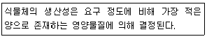
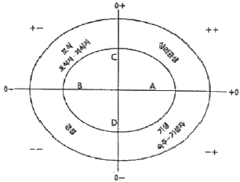
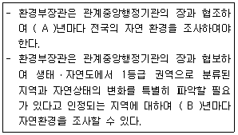
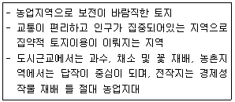
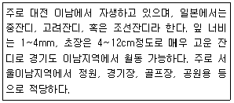
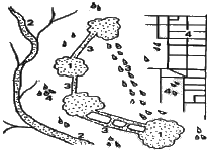
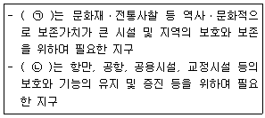
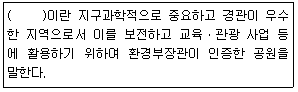
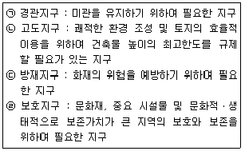

자연생태복원기사(구) (2019-04-27 기출문제)
1과목: 환경생태학개론
1. 군집 수준의 생물종 다양성을 결정짓는 두 가지 요소는?
- 균등도(evenness), 변이도(variety)
- 생물량(biomass), 유사도(similarity)
- 우점도(dominance), 중요치(importance value)
- 종 풍부도(species richness), 균등도(evenness)
(정답률: 77%)

2. 물이 깨끗하고 적은 개체수의 수서 생물이 살고 있는 호수에 인근지역의 가축분뇨와 생활하수 등이 유입되면서 호수 생태계가 변화하기 시작하였다. 이 때 호수 영양상태의 경과된 변화는?
- 부영양화→소택지
- 소택지→빈영양화
- 빈영양화→부영양화
- 부영양화→빈영양화
(정답률: 68%)
3. 연안대에 서식하는 식물의 종류를 잘못 설명한 것은?
- 부유(floating)식물-물속의 토양에 뿌리를 내리며, 잎이 물 위에 떠있는 식물
- 부엽(floating leaved)식물-물속의 토양에 뿌리를 내리며, 잎이 물 위에 떠있는 식물
- 정수(emergent)식물-물속의 토양에 뿌리를 내리며, 몸체는 물에 잠겨 있고, 잎은 물 위로 성장하는 식물
- 침수(submerged)식물-물속의 토양에 뿌리를 내리며, 몸체가 모두 물에 잠겨 있는 수초
(정답률: 73%)
4. 환경변화에 대한 생물체의 반응(response)이 아닌 것은?
- 압박(stress)
- 치사(lethal)
- 차폐(masking)
- 조절(controlling)
(정답률: 49%)
5. 생물군집의 특성이 아닌 것은?
- 비중
- 우점도
- 종의 다양성
- 개체군의 밀도
(정답률: 73%)
6. 부분순환호(meromictic lake)에 대한 설명으로 가장 거리가 먼 것은?
- 하층은 무산소 상태이다.
- 상하층이 동질적인 환경이다.
- 하층이 상층보다 밀도가 높다.
- 상하층의 물이 섞이지 않아 층형성이 계속 유지된다.
(정답률: 67%)
7. 두 가지 다른 생물의 관계에서 편리공생의 예로 가장 적합한 것은?
- 개미와 아카시아
- 열대우림과 난초류
- 리기테다소나무와 균근
- 콩과식물과 뿌리혹박테리아
(정답률: 44%)
8. 다음이 설명하는 법칙은?

- shelford의 내성법칙
- Liebig의 최소량의 법칙
- Shannon의 다양성 법칙
- Hardin의 경쟁적 배제의 법칙
(정답률: 85%)
9. 다음 그림에서 편리공생의 위치를 나타내는 것은?

- A
- B
- C
- D
(정답률: 73%)
10. 수질의 부영양화 현상과 가장 거리가 먼 것은?
- 생물농축
- 적조현상
- 용존산소의 고갈
- N.P의 과량 유입
(정답률: 61%)
11. 산림쇠퇴의 특징으로 가장 거리가 먼 것은?
- 생체량의 순생산량은 증가한다.
- 성숙, 노화 개체들에서 선택적으로 발생하여 확산된다.
- 악천후, 영양결핍, 토양내 독성물질, 대기오염 등이 원인이다.
- 광범위한 지역의 식생이 동시에 고사하는 결과를 초래할 수 있다.
(정답률: 80%)
12. 밀도가 높은 수림대의 특성으로 옳은 것은?
- 광선은 비교적 잘 투과되지만 잔디 등 하층의 식생은 곤란하다.
- 독립수나 몇 개의 수목군이 산재하는 수림으로서 수관이 불연속적이다.
- 수목구성은 낙엽수가 대부분이며, 상록수는 종(從)의 관계가 되는 것이 보통이다.
- 고목층과 아고목층의 수관이 중복되어 있고, 거의 완전하게 하늘을 덮기 때문에 극히 폐쇄적인 수림이다.
(정답률: 74%)
13. 물질의 순환 중 질소순환에 대한 설명으로 틀린 것은?
- 질소는 대기 중 다량으로 존재하며 식물체에 직접 이용된다.
- 질소고정생물은 대기 중의 분자상 질소를 암모니아로 전환시킨다.
- 대부분의 식물은 암모니아나 질산염의 형태로 질소를 흡수한다.
- 식물은 단백질과 기타 많은 화합물을 합성하는데 질소를 사용한다.
(정답률: 63%)
14. 생태계의 포식상호작용에서 피식자가 포식자로부터 피식되는 위험을 최소화하기 위한 장치로 볼 수 없는 것은?
- 의태(mimicry)
- 방위(defense)
- 위장(camouflage)
- 상리공생(mutualism)
(정답률: 80%)
15. 질소고정 방법으로 가장 적합하지 않은 것은?
- 산업적 질소고정
- 번개에 의한 질소고정
- 미생물에 의한 질소고정
- 생태계 천이에 의한 질소고정
(정답률: 43%)
16. 시간에 따른 군집의 변화를 무엇이라 하는가?
- 항상성
- 다양성
- 생태적 천이
- 생명부양시스템
(정답률: 80%)
17. 생태계 내의 질소순환(Nitrogen Cycle)에서 생산자들이 질소를 이용할 때의 형태는?
- NO3-
- N2O
- N2
- NH4+
(정답률: 56%)
18. 생물의 사체나 배설물로부터 에너지 흐름이 시작되는 먹이사슬은?
- 방목 먹이사슬
- 부니 먹이사슬
- 육상 먹이사슬
- 해상 먹이사슬
(정답률: 75%)
19. 생태계의 생물적 구성요소 중의 하나인 생산자(producer)에 해당하지 않는 것은?
- 남조류
- 속씨식물
- 광합성 세균
- 종속영양성 식물
(정답률: 56%)
20. 생태계에서 순환하는 물질로서 가장 거리가 먼 것은?
- 인
- 탄소
- 질소
- 우라늄
(정답률: 83%)
2과목: 환경계획학
21. 환경계획 및 설계 시 고려되어야 할 내용으로 가장 거리가 먼 것은?
- 환경위기 의식이 기본바탕이 되어야 한다.
- 계획ㆍ설계의 주제와 공간의 주체가 생물종이 되어야 한다.
- 에너지 절약적이고 물질순환적인 공간설계가 이루어져야 한다.
- 자본 창출을 위한 생선성을 높일 수 있어야 한다.
(정답률: 79%)
22. 경관을 이루는 기본단위인 경관요소와 가장 거리가 먼 것은?
- Patch
- Corridor
- Matrix
- View point
(정답률: 75%)
23. 일정한 지역에서 환경의 질을 유지하고 환경오염 또는 환경훼손에 대하여 환경이 스스로 수용ㆍ정화 및 복원 할 수 있는 한계를 말하는 것은?
- 환경용량
- 환경훼손
- 환경오염
- 환경파괴
(정답률: 81%)
24. 백두대간 보호에 관한 법률상 백두대간보호 지역 중 핵심구역에서 할 수 있는 행위가 아닌 것은?
- 교육, 연구 및 기술개발과 관련된 시설 중 대통령령으로 정하는 시설의 설치
- 도로ㆍ철도ㆍ하천 등 반드시 필요한 공용ㆍ공공용 시설로서 대통령령으로 정하는 시설의 설치
- 농가주택, 농림축산시설 등 지역주민의 생활과 관계되는 시설로서 대통령령으로 정하는 시설의 설치
- 광산의 시설기준, 개발면적의 제한, 훼손지의 복구 등 대통령령으로 정하는 일정 조건하에서의 광산개발
(정답률: 35%)
25. 녹지자연도의 등급별 토지이용 현황에 대한 연결로 틀린 것은?
- 1등급(시가지):녹지식생이 거의 존재하지 않는 지구
- 3등급(과수원):경작지나 과수원, 모포지 등과 같이 비교적 녹지식생의 분량이 우세한 지구
- 6등급(2차림):1차적으로 2차림이라 불리는 대상 식생지구
- 9등급(자연림):다층의 식물사회를 형성하는 천이의 마지막에 나타나는 극상림지구
(정답률: 60%)
26. 환경계획의 주요 개념과 이론이 아닌 것은?
- 환경경제이론
- 환경용량개념
- 환경공간이론
- 환경사회시스템론
(정답률: 50%)
27. 토지이용계획의 역할과 거리가 먼 것은?
- 토지이용의 규제와 실행수단의 제시 기능
- 세부 공간환경설계에 대한 지침제시의 역할
- 사회의 지속가능성을 위한 토지의 보전기능
- 토지의 개발이 소유자에 의해 자의적으로 이루어지게 하는 기능
(정답률: 77%)
28. SCOPE의 환경 지표세트 체계를 순자원역경지표, 종합오염지표, 생태계위험지표, 인간생활에의 영향지표로 구분할 때 다음 중 생태계위험지표에 해당되는 것은? (단, SCOPE는 환경문제과학위원회(Scientific Committee on Problem of the Environment)이다.)
- 인구 분포
- 대기오염의 영향
- 산성화를 유발하는 물질
- 어업자원과 어장환경의 소모
(정답률: 34%)
29. 성공적인 자연환경복원이 이루어지기 위한 생태계복원 원칙이 아닌 것은?
- 대상지역의 생태적 특성을 존중하여 복원계획을 수립, 시행한다.
- 각 입지별 유일한 생태적 특성을 인식하여 복원계획을 수립, 반영한다.
- 다른 지역과 차별화 되는 자연적 특성을 우선적으로 고려한다.
- 도입되는 식생은 가능한 조기녹화를 고려한 외래수종을 우선적으로 하고 추가로 자생종을 사용한다.
(정답률: 80%)
30. 1971년 유네스코가 설립한 MAB(Man and the Biosphere Programme)에서 지정한 생물권보전지역을 구분하는 세 가지 기본요소가 아닌 것은?
- 완충지역
- 핵심지역
- 전이지역
- 관리지역
(정답률: 78%)
31. 생태도시 계획에 있어서 생태적 원칙에 적합하지 않은 것은?
- 순환성
- 다양성
- 개별성
- 안정성
(정답률: 77%)
32. 생태공원 조성을 위한 기본 원칙에 해당하지 않는 것은?
- 지속가능성 확보
- 생물적 다양성 확보
- 생태적 건전성 확보
- 관리인력 수요 창출
(정답률: 77%)
33. 지역 환경 생태계획의 생태적 단위를 큰 것부터 작은 순서대로 나열한 것은?
- Landscape District→Ecorgion→Bioregion→Sub-bioregion→Place unit
- Bioregion→Sub-bioregion→Ecorgion→Place unit→Landscape District
- Place unit→Bioregion→Sub-bioregion→Ecorgion→Landscape District
- Ecorgion→Bioregion→Sub-bioregion→Landscape District→Place unit
(정답률: 53%)
34. 생태도시에 적용할 수 있는 계획요소로서 관련이 가장 적은 것은?
- 관광 분야
- 물ㆍ바람 분야
- 에너지 분야
- 생태 및 녹지 분야
(정답률: 64%)
35. 자연환경조사에 관한 설명의 A, B에 적합한 조사주기를 순서대로 작성한 것은?

- 5년, 1년
- 5년, 2년
- 10년, 1년
- 10년, 2년
(정답률: 56%)
36. 다음은 토양 분류에 따른 토지능력에 대한 특징이다. 몇 급지에 해당하는 토지인가?

- 1급지
- 2급지
- 3급지
- 5급지
(정답률: 44%)
37. 녹지네트워크의 구성요소를 점요소, 선요소, 면적요소로 구분할 때 면적요소에 해당하는 것은?
- 화분
- 가로수
- 생태통로
- 서울의 남산
(정답률: 75%)
38. 환경친화적인 토지이용계획으로 옳지 않은 것은?
- 선진도시와 같이 도시 구조를 명확히 한 후 환경 보전형 도시로 도모할 필요가 있다.
- 도시지역 전체의 토지이용에 대한 상세한 규제와 통제가 필요하다.
- 도시의 분절화를 위해서는 도시 전체를 한꺼번에 계획해서 사업해 나가야 한다.
- 도시 시가지를 분절화 시켜 여러 가지 영향에 대해서 완화할 필요가 있다.
(정답률: 72%)
39. 국토의 계획 및 이용에 관한 법률상 특별시ㆍ광역시의 도시ㆍ군기본계획의 확정에 대한 설명 중 틀린 것은?
- 특별시장, 광역시장은 도시ㆍ군기본계획을 수립 또는 변경하고자 하는 때에는 별도의 지방도시계획위원회의 심의를 거치지 않고 관계 행정기관의 장과 협의한다.
- 특별시장은 도시ㆍ군기본계획을 수립하거나 변경한 경우에는 관계 행정기관의 장에게 관계 서류를 송부하여야 한다.
- 협의 요청을 받은 관계 행정기관의 장은 특별한 사유가 없으면 그 요청을 받은 날로부터 30일 이내에 특별시장 광역시장에게 의견을 제시하여야 한다.
- 특별시장은 도시ㆍ군기본계획을 수립, 변경한 경우에는 대통령령으로 정하는 바에 따라 그 계획을 공고하고 일반인이 열람할 수 있도록 하여야 한다.
(정답률: 72%)
40. 국토의 계획 및 이용에 관한 법률상 용도지역에서 건폐율의 최대한도 기준으로 옳지 않은 것은?
- 녹지지역 : 20퍼센트 이하
- 농림지역 : 40퍼센트 이하
- 생산관리지역 : 20퍼센트 이하
- 계획관리지역 : 40퍼센트 이하
(정답률: 42%)
3과목: 생태복원공학
41. 어떤 하천의 수로(유심선)거리가 3km이며, 계곡거리가 1.3km일 경우 만곡도 지수(sinuosity index)와 하천의 종류가 맞게 짝지어진 것은?
- 0.43, 직류하천
- 0.43. 사행하천
- 2.31, 직류하천
- 2.31, 사행하천
(정답률: 38%)
42. 수질정화를 위한 습지의 조성은 3단계 시스템으로 가는 것이 바람직하다. 오염물질의 유입 이후 3단게 시스템을 잘 나타낸 것은?
- 생물다양상 향상 습지→침전습지→오염물질 정화 습지
- 침전습지→생물다양성 향상 습지→오염물질 정화 습지
- 오염물질 정화 습지→침전습지→생물다양성 향상 습지
- 침전습지→오염물질 정화 습지→생물다양성 향상 습지
(정답률: 63%)
43. 생태복원을 위해 다져진 토량 18000m3를 성토할 때 운반토량(m3)은 얼마인가? (단, 토량변화율은 L은 1.25, C는 0.9이다.)
- 20000
- 20250
- 22500
- 25000
(정답률: 52%)
44. 녹화공사용 시공자재로서의 목재의 성질을 잘못 설명한 것은?
- 가공의 횟수가 적어 부패의 위험성이 적다.
- 리기다소나무, 밤나무, 참나무류 등은 기초말뚝으로도 사용된다.
- 통나무는 거친 질감을 갖고 있지만, 원목이라는 점에서 자연스러움의 표현이 가능하다.
- 침엽수의 간벌재는 입도개설 시에 절ㆍ설토비탈면의 비탈 침식 방지 공사용으로 사용할 수 있다.
(정답률: 66%)
45. 비탈(면)식생재녹화공법 중 식물의 자연침입을 촉진하는 식생공법을 총칭하는 것은?
- 지오웨브공법
- 식생유도공법
- 식생대녹화공법
- 식생반녹화공법
(정답률: 66%)
46. 매립지 복원공법 중 산흙 식재지반 조성 시 하부층이 사질토인 경우에 적용하는 기법으로 가장 거리가 먼 것은?
- 사주법
- 성토법
- 치환객토법
- 비사방지용 산흙 피복법
(정답률: 43%)
47. 양단면적이 각각 60m2, 50m2이고, 두 단면간의 길이가 20m일 때의 평균단면적법에 의한 토사량(m3)은 얼마인가?
- 750
- 900
- 1100
- 1500
(정답률: 67%)
48. 곤충의 서식지를 조성하는 원칙에 대한 설명으로 부적합한 것은?
- 잠자리유충의 생육을 위해서는 BOD(생물화학적 산소 요구량)가 10ppm 이하의 수질이 유지되어야 한다.
- 수환경의 조성 시 연못의 형태는 원형을 이루어야 생태적으로 안정되고 생물의 다양성에도 기여할 수 있다.
- 모래나 자갈로 구성된 장소를 일부분에 마련하면 그곳에 적합한 곤충들의 생육에 도움이 된다.
- 연못의 수심은 30cm 이상이면 가능하고 완만한 경사를 이루는 것이 수생물의 생육에 도움이 되어 곤충의 서식처를 제공할 수 있다.
(정답률: 45%)
49. 생태기반을 위한 경사면 식재충 조성을 위한 방법에 대한 설명으로 가장 거리가 먼 것은?
- 0~3%의 경사지는 표면배수에 문제가 있으며, 식재할 때 큰 규모의 식재군을 형성해 주거나 마운딩 처리
- 3~8%의 경사지는 완만한 구릉지로 정지작업량이 증가하기 때문에 식재지로는 부적당
- 8~15%의 경사지는 구릉지이거나 암반노출지로 토양층이 깊게 발달되지 않아서 관상수목의 집중 식재가 불가능
- 15~25%의 경사지는 일반적인 식재기술로는 식재가 거의 불가능
(정답률: 61%)
50. 훼손지 비탈면에 사용되는 식물 줄 형태적으로 근계(根系) 신장이 좋은 식물이 아닌 것은?
- 억새
- 비수리
- 까치수영
- 크리핑레드훼스큐
(정답률: 47%)
51. 다음의 특성을 가진 잔디는?

- Zoysia sinica(갯잔디)
- Zoysia japonica(들잔디)
- Zoysia motrella(금잔디)
- Zoysia trnuifolia(비로드잔디)
(정답률: 58%)
52. 토양수분의 유형 중 식물이 주로 사용하는 수분은?
- 화합수
- 흡습수
- 모관수
- 중력수
(정답률: 63%)
53. 야생동물의 이동 목적에 대한 설명으로 틀린 것은?
- 종족의 번식을 위해
- 개체군의 분산을 위해
- 부모의 궤적을 따르기 위해
- 부적합한 환경으로부터 벗어나기 위해
(정답률: 62%)
54. 도로 아래에 이미 설치된 수로박스와 수로관등의 암거수로를 이용하여 생태통로를 만들 때 어떤 보완시설의 설치가 필요한가?
- 기둥
- 비포장 통로
- 울타리 설치
- 선반이나 턱 구조물
(정답률: 54%)
55. 조류와 인간의 거리 중에서 사람이 접근하면 수십 cm에서 수m를 걸어 다니면서 사람과의 일정한 거리를 유지하려고 하는 거리는?
- 경계거리
- 회피거리
- 도피거리
- 비간섭거리
(정답률: 46%)
56. 생태통로 조성 시 야생동물의 유인 및 이동을 촉진시키기 위한 방법으로 틀린 것은?
- 조류의 유인을 위해 식이식물을 식재한다.
- 포유류의 이동을 위해 단층구조의 수림대를 조성한다.
- 양서류의 이동을 위해 측구 등에 의한 이동용 보조통로를 설치한다.
- 곤충의 유인 및 이동을 위해 먹이식물이나 밀원식물을 적극 도입한다.
(정답률: 76%)
57. 생태공원의 계획 과정과 그 내용이 잘못 연결된 것은?
- 목적 및 목표 설정-목표종 및 서식처 특성 설정
- 현황 조사 및 분석-유지및 관리계획
- 기본구상-프로그램의 기능적 연결
- 기본계획 및 부문별 계획-서식처 계획, 토지이용계획
(정답률: 66%)
58. 생태통로에 대한 설명 중 옳은 것은?
- 최초의 생태통로는 독일에서 시작되었다.
- 생태통로의 역할은 사람들의 이동에만 활용되어야 한다.
- 생태통로는 야생동물의 서식처를 연결 하며 자연적으로 형성되었다.
- 초기에 건설된 생태통로는 대체로 작고, 촉이 좁은 관계로 대부분 비효율적인 것으로 평가되었다.
(정답률: 54%)
59. 토양의 불량요인에 따른 보완대책에 대한 설명 중 틀린 것은?
- 토성불량:객토 및 개량재 혼합 실시
- pH의 부적합:객토, 중화, 개량재 혼합 등
- 배수불량:배수, 경운, 개량재 혼합, 개량재 층상 부설 등
- 통기ㆍ투수불량:개량제, 유효토심을 두껍게 하고, 멀칭을 실시
(정답률: 69%)
60. 영양단위의 최상위에 위치하는 대형포유류나 맹금류 등 서식에 넓은 면적을 필요로 하고, 이 종을 지키면 많은 종의 생존이 확보된다고 생각되며 생태계 보전 및 복원의 목표가 되는 종군을 무엇이라 하는가?
- 지표종
- 핵심종
- 상징종
- 우산종
(정답률: 50%)
4과목: 경관생태학
61. 토지(경관) 모자이크의 특성에 대한 설명 중 옳지 않은 것은?
- 경관모자이크는 이질적인 공간의 집합으로 이루어진다.
- 모자이크 내의 다양한 서식지들은 많은 종 집합의 근원이 된다.
- 모자이크 내 종의 근원은 한 방향으로 작용하며 확산되어 간다.
- 모자이크는 매우 불균일하며, 그 형태와 적합성이 광범위한 서식지를 포함한다.
(정답률: 65%)
62. 지역환경시스템의 경관계획에 있어서 그림에서 보여주는 바와 같이 가장 우선되는 생태학적 필수 요소들이 4가지 있다. 이들 필수 요소에 대한 설명이 잘못된 것은?

- 1:몇 개의 큰 농경지 바탕
- 2:주요 지류 또는 하천통로
- 3:큰 조각 사이의 통로와 징검다리의 연결성
- 4:기질을 따라 나타나는 자연의 불균일성 흔적
(정답률: 46%)
63. 가장자리 효과의 설명으로 가장 적합하지 않은 것은?
- 토양의 상태를 조절한다.
- 태양복사에너지를 조절한다.
- 인간은 가장자리를 유지하는데 주도적인 역할은 한다.
- 사냥감이 되는 초식동물의 밀도는 내부지역보다 더 낮다.
(정답률: 33%)
64. 경관생태학에서 자연환경요소가 유기적인 수직관계를 가진 독특한 경관단위를 구성하고 자연 및 인공조건의 상호작용을 통해 경계를 형성하는 지역으로 정의하는 용어는?
- 생물권
- 결절지역
- 경관모자이크
- 도시생태계
(정답률: 54%)
65. 다음 습지생태계의 평가를 위한 모델 중 설명이 틀린 것은?
- EMAP:캐나다 정부에서 주관하는 환경평가기법으로 생물상의 평가에 탁월하다.
- HEP:어류 및 야생동물서식지를 평가하기위한 모델로 지표종을 선정하여 평가한다.
- RAM:숙련된 연구자들이 짧은 기간의 현장조사를 통하여 얻은 자료를 이용한다.
- IBI:특정 습지의 구조와 기능을 자연상태의 습지와 비교하여 평가한다.
(정답률: 32%)
66. 원격탐사(Remote Sensing)를 환경문제에 응용할 때의 유리한 특징으로 볼 수 없는 것은?
- 일시성
- 주기성
- 광역성
- 동시성
(정답률: 69%)
67. 인공경관 생태의 유형으로 볼 수 없는 것은?
- 농촌
- 도시
- 도서(섬)
- 도로 및 건축 구조물
(정답률: 67%)
68. 트롤(Troll, C.)에 의한 최소의 경관개체에 대한 설명이 아닌 것은?
- 최소의 경관개체를 에코톱이라 한다.
- 동질의 잠재자연식생이 분포하는 영역이다.
- 기후와 토양, 식생 간의 상호 작용이 두드러진다.
- 경관개체의 내부에는 여러 가지 요소 간의 긴밀한 상호 작용이 인정된다.
(정답률: 48%)
69. 토지 변형에 따른 경관 특성 변화와 관계가 먼 것은?
- 연결성
- 조각의 크기
- 둘레의 길이
- 전자파의 이용
(정답률: 77%)
70. 등질지역과 결절지역을 개념적으로 구별하는 것은 매우 중요하다. 하지만 이것은 등질지역이라 봐야하는지 결정지역이라 봐야하는지에 관해서는 종종 혼란이 있다. 이러한 혼란을 줄이기 위한 방법으로 지역구분의 기준이 될 수 있는 것은?
- 방향
- 연결
- 종류
- 공간범위
(정답률: 47%)
71. 높은 하천차수를 갖는 하천의 특징과 거리가 먼 것은?
- 짧은 길이
- 완만한 경사
- 넓은 유역면적
- 넓고 깊은 하천 단면
(정답률: 69%)
72. 산림녹지의 주요 기능이 아닌 것은?
- 수자원보호
- 자연 및 경관보호
- 휴양기능보호
- 생활주거지 확보
(정답률: 71%)
73. 경관의 안정성에 대한 설명으로 틀린 것은?
- 안정성은 경관의 간섭에 대해 저항하는 정도와 간섭으로부터의 회복력을 말한다.
- 경관의 전체 안정성은 현존하는 경관요소의 각 형태의 비율을 반영한다.
- 생체량이 높은 경우 체계는 보통 간섭에 저항력이 높으며 간섭으로부터의 회복 또한 빠르다.
- 경관 모자이크의 안정성은 물리적 체계의 안정성, 간섭으로부터의 빠른 회복, 간섭에 대환 강한 저항성 등 세 가지 방식으로 증가한다.
(정답률: 42%)
74. 생태적 도시림의 설명으로 옳지 않은 것은?
- 생태적 관리 기술이 도시에서도 적용될 수 있다.
- 도시림은 자기유지적인 경관을 창출해야 한다.
- 도시림의 유지비용을 충분히 확보할 필요가 없다.
- 조성 시 식재 초기에는 빨리 자라고 햇빛을 많이 요구하는 식물을 식재한다.
(정답률: 62%)
75. 인공갯벌의 조성목적이라고 볼 수 없는 것은?
- 연안개발 적합지로 공간의 활용
- 상실된 갯벌을 대체할 수 있는 갯벌의 조성
- 연안환경 인프라로서 새로운 갯벌의 창출
- 상실 위험이 있는 기존 갯벌의 보호 및 기능 유지
(정답률: 57%)
76. 숲에 임도와 등산로가 많아지면 생태계의 종 다양성 측면에서 바람직하지 못하다. 그 이유로 가장 적합한 것은?
- 내부종이 늘어나고 가장자리 종인 덩굴식물이 줄어든다.
- 내부종이 줄어들고 가장자리 종인 덩굴식물이 줄어든다.
- 내부종이 늘어나고 가장자리 종인 덩굴식물이 늘어난다.
- 내부종이 줄어들고 가장자리 종인 덩굴식물이 늘어난다.
(정답률: 64%)
77. 식생에 의한 비탈면 보호공법으로 가장 거리가 먼 것은?
- 잔디 파종공법
- 식생혈공법
- 콘크리트 붙임공법
- 식생매트공법
(정답률: 71%)
78. 야생조류를 보호하기 위한 자연보호지구(National Nature Reserves)에 관한 설명으로 틀린 것은?
- 자원의 보전 및 관리를 목적으로 한다.
- 조사, 연구, 실험, 교육 등을 위한 공간을 제공한다.
- 지속적으로 자연환경의 변화를 모니터링 할 수 있는 장소가 되어야 한다.
- 야생동물을 보호하기 위해서는 실용적 관점보다 이론적 관점에 치중해야 한다.
(정답률: 76%)
79. 댐이 환경에 미치는 영향으로 거리가 먼 것은?
- 어류 등의 이동 저해
- 소하천의 감소, 수질의 변화
- 식생 및 동물 서식지역의 감소와 분리
- 하류하천의 하상 재료 변화 및 하상의 상승
(정답률: 74%)
80. 생태통로를 설치하기 위한 적지 선정에 활용하는 GIS나 RS기법에 대한 설명으로 틀린 것은?
- 다양한 조건을 이용하여 모의실험이 가능하다.
- 생태통로를 이용하는 모든 동물종을 예측할 수 있다.
- 객관적이고 합리적인 입지선정 대안을 제시할 수 있다.
- 대상지역에 대한 상세한 정보와 대용량의 자료를 용이하게 처리할 수 있다.
(정답률: 76%)
5과목: 자연환경관계법규
81. 국토의 계획 및 이용에 관한 법률 시행령상 용어에 대한 정의이다. ()안에 들어갈 세분한 용도지구로서 가장 적합한 것은?

- ㉠ 문화자원보호지구, ㉡ 안보시설물보호지구
- ㉠ 문화자원보호지구, ㉡ 중요시설물보호지구
- ㉠ 역사문화환경보호지구, ㉡ 안보시설물보로지구
- ㉠ 역사문화환경보호지구, ㉡ 중요시설물보호지구
(정답률: 63%)
82. 야생생물 보호 및 관리에 관한 법률상 멸종위기 야생생물 Ⅱ급을 포획ㆍ채취ㆍ훼손하거나 고사시킨 자에 대한 벌칙기준으로 옳은 것은?
- 7천만원 이하의 벌금
- 3년 이하의 징역 또는 300만원 이상 3천만원 이하의 벌금
- 5년 이하의 징역 또는 500만원 이상 5천만원 이하의 벌금
- 2년 이하의 징역 또는 2000만원 이하의 벌금
(정답률: 60%)
83. 국토의 계획 및 이용에 관한 법률에 관한 설명 중 옳지 않은 것은?
- 도시ㆍ군기본계획의 내용이 광역도시계획의 내용과 다를 때에는 광역도시계획의 내용이 우선한다.
- 도시ㆍ군기본계획은 광역도시계획에 부합되어야 하나 도시ㆍ군관리계획은 반드시 광역도시계획에 부합하여야 하는 것은 아니다.
- 도시ㆍ군기본계획이란 특별시ㆍ광역시ㆍ특별자치시ㆍ특별자치도ㆍ시 또는 군의 관할구역에 대하여 기본적인 공간구조와 장기발전방향을 제시하는 종합계획으로서 도시ㆍ군관리계획수립의 지침이 되는 계획이다.
- 도시ㆍ군계획은 특별시ㆍ광역시ㆍ특별자치시ㆍ특별자치도ㆍ시 또는 군의 관할구역에서 수립되는 다른 법률에 따른 초지의 이용ㆍ개발 및 보전에 관한 계획의 기본이 된다.
(정답률: 50%)
84. 환경정책기본법령상 이산화질소의 대기환경기준(ppm)은? (단, 24시간 평균치)
- 0.03 이하
- 0.⑤ 이하
- 0.06 이하
- 0.10 이하
(정답률: 55%)
85. 생물다양성 보전 및 이용에 관한 법률 시행령상 환경부장관은 국내에 서식하는 모든 생물종에 대하여 국가 생물종 목록을 구축하도록 되어 있는데, 이 국가 생물종 목록 구축에 필요한 자료와 가장 거리가 먼 것은?
- 종별 생태적ㆍ분류학적 특징
- 조사자, 조사시간 및 조사방법
- 생물종의 영명(英名) 및 근연종명
- 종별 주요 서식지 및 국내 분포 현황
(정답률: 55%)
86. 환경정책기본법령에 따른 환경기준에서 일반지역에 위치한 녹지지역 및 보전관리지역의 소음기준으로 적당한 것은?
- 낮 40dB, 밤 30dB
- 낮 50dB, 밤 40dB
- 낮 65dB, 밤 55dB
- 낮 75dB, 밤 70dB
(정답률: 58%)
87. 야생생물 보호 및 관리에 관한 법률 시행 규칙상 수렵면허시험에 관한 사항으로 옳지 않은 것은?
- 시ㆍ도지사는 매년 1회 이상 수렵면허 시험을 실시하여야 한다.
- “수렵에 관한 법령 및 수렵의 절차”는 수렵면허 시험대상이 되는 환경부령으로 정하는 사항에 포함된다.
- “안전사고의 예방 및 응급조치에 관한 사항”은 수렵면허 시험대상이 되는 환경부령으로 정하는 사항에 포함된다.
- 시ㆍ도지사는 수렵면허시험의 필기시험일 30일 전에 수렵면허시험 실시공고서에 따라 수렵면허시험의 공고를 하여야 한다.
(정답률: 50%)
88. 자연환경보전법상 생태ㆍ자연도를 작성하기 이한 지역 구분에서 1등급 권역에 해당되는 사항이 아닌 것은?
- 생태계가 특히 우수하거나 경관이 특히 수려한 지역
- 생물다양성이 특히 풍부하고 보전가치가 큰 생물자원이 존재ㆍ분포하고 있는 지역
- 멸종위기 야생생물의 조된 서식지ㆍ도래지 및 주요 생태축 또는 주요 생태통로가 되는 지역
- 역사적ㆍ문화적ㆍ경관적 가치가 있는 지역이거나 도시의 녹지보전 등을 위하여 관리되고 있는 지역
(정답률: 72%)
89. 다음은 자연공원법상 용어의 뜻이다. ()안에 적합한 것은?

- 지질공원
- 역사공원
- 테마공원
- 자연휴양림공원
(정답률: 73%)
90. 국토의 계획 및 이용에 관한 법률상 각 용도지역별 용적률의 최대한도 기준으로 옳은 것은?
- 농림지역:80퍼센트 이하
- 자연환경보전지역:100퍼센트 이하
- 도시지역 중 녹지지역:500퍼센트 이하
- 관리지역 중 생산관리지역:100퍼센트 이하
(정답률: 37%)
91. 습지보전법령상 명예습지생태안내인의 위촉기간은?
- 1년
- 2년
- 3년
- 5년
(정답률: 54%)
92. 환경정책기본법령상 수질 및 수생태계 기준 중 하천에서 사람의 건강보호 기준으로 옳지 않은 것은? (단, 단위는 mg/L이다.)
- 납(Pb):0.02 이하
- 사염화탄소:0.004 이하
- 음이온계면활성제(ABS):0.5 이하
- 테트라클로로에틸렌(PCE):0.04 이하
(정답률: 41%)
93. 독도 등 도서지역의 생태계 보전에 관한 특별법 시행령상 특정도서 안에서 천재지변으로 인한 재해방재를 위해 건축물 증축 등 필요한 행위를 한 자는 행위종류 후 며칠 이내에 행위의 목적 또는 사유 등을 기재한 제한행위를 환경부장관에게 신고 또는 통보하여야 하는가?
- 10일 이내
- 30일 이내
- 60일 이내
- 90일 이내
(정답률: 64%)
94. 자연환경보전법상 용어의 정의 중 틀린 것은?
- “자연생태”라 함은 자연의 상태에서 이루어진 지리적 또는 지질적 환경과 그 조건 아래에서 생물이 생활하고 있는 일체의 현상을 말한다.
- “생태계”란 식물ㆍ동물 및 미생물 군집(群集)들과 무생물 환경이 기능적인 단위로 상호작용하는 역동적인 복합체를 말한다.
- “소(小)생태계”라 함은 생물다양성을 증진시키고 생태계 기능의 연속성을 위하여 생태적으로 중요한 지역 또는 생태적 기능의 유지가 필요한 지역을 연결하는 생태적 서식공간을 말한다.
- “생물다양성”이라 함은 육상생태계 및 수생생태계(해양생태계를 제외한다)와 이들의 복합생태계를 포함하는 모든 원천에서 발생한 생물체의 다양성을 말하며, 종내(終乃)ㆍ종간(種間) 및 생태계의 다양상을 포함한다.
(정답률: 50%)
95. 자연공원법상 공원자연보존지구 지정에 해당하는 곳과 가장 거리가 먼 것은?
- 생물다양성이 특히 풍부한 곳
- 자연생태계가 원시성을 지니고 있는 곳
- 특별히 보호할 가치가 높은 야생 동식물이 살고 있는 곳
- 마을이 형성된 지역으로서 주민생활을 유지하는 데에 필요한 지역
(정답률: 80%)
96. 국토의 계획 및 이용에 관한 법률상 용도지구에 관한 설명 중 틀린 것을 모두 열거한 것은?

- ㉠, ㉡
- ㉠, ㉢
- ㉡, ㉢
- ㉢, ㉣
(정답률: 44%)
97. 생물다양성 보전 및 이용에 관한 법률상 국가생물다양성 센터의 운영업무로 옳지 않은 것은?
- 생물자원의 목록 구축
- 외래생물종의 국내 유통 및 현황 관리
- 생물자원 관련 기관과의 협력체계 구축
- 생물자원의 기탁, 등록, 평가, 분양 등 활용에 관한 현황 관리
(정답률: 65%)
98. 야생생물 보호 및 관리에 관한 법률 상 수렵장에서도 수렵이 제한되는 시간 및 장소로 옳지 않은 것은?
- 시가지, 인가 부근
- 도로로부터 100m 이내의 장소
- 운행 중인 차량, 선박 및 항공기
- 해가 뜬 후부터 해기 지기 전까지
(정답률: 66%)
99. 자연환경보전법 시행령상 자연경관영향의 협의 대상이 되는 경계로부터의 거리에 대한 설명으로 옳은 것은? (단, 일반기준임)
- 습지보호지역 : 500m
- 자연공원(최고봉 700m 미만 또는 해상형) : 700m
- 생태ㆍ경관보전지역(최고봉 700m 이상) : 1000m
- 자연공원(최고봉 1200m 이상) : 1500m
(정답률: 50%)
100. 습지보전법 제정의 목적으로 옳지 않은 것은?
- 습지와 그 생물다양성의 보전을 도모함
- 습지의 조사를 위한 분류방법 등을 규정함
- 습지의 효율적 보전ㆍ관리에 필요한 사항을 규정함
- 습지에 관한 국제협약의 취지를 반영함으로써 국제협력의 증진에 이바지함
(정답률: 46%)